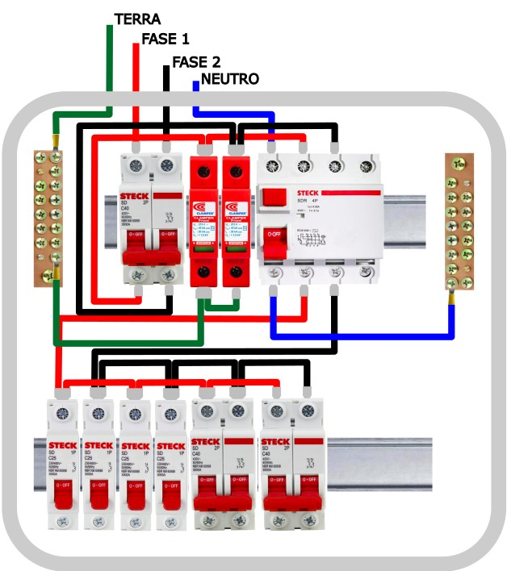

Montagem Profissional de Quadros de Distribuição
A montagem do quadro de distribuição deve seguir critérios técnicos que garantam segurança, organização e facilidade de manutenção. Não basta apenas conectar os cabos — é necessário respeitar padrões de organização, identificação e sequência dos dispositivos de proteção.
Organização Física e Layout dos Componentes
A organização interna do quadro deve seguir uma sequência lógica de proteção e distribuição:
- Disjuntor geral: ponto de entrada da instalação;
- DPS: proteção contra surtos elétricos;
- DR: proteção contra choques elétricos;
- Disjuntores: distribuição dos circuitos finais.

Análise técnica do padrão de montagem:
Observe que os cabos estão organizados lateralmente, sem cruzamentos excessivos, com cores padronizadas e dispositivos alinhados no trilho DIN. Essa organização facilita a manutenção, reduz erros de ligação e melhora a dissipação de calor dentro do quadro.
👉 Em um ambiente profissional, esse nível de organização não é estética — é requisito de segurança e qualidade.
Técnicas de Conexão
- Utilizar barramento tipo pente para alimentação dos disjuntores;
- Utilizar terminais (ilhós) em cabos flexíveis;
- Evitar emendas dentro do quadro;
- Realizar aperto correto dos bornes.
Atenção: conexões mal apertadas geram aquecimento e podem causar falhas ou incêndios.
Organização dos Condutores
- Fase: preto, vermelho ou marrom;
- Neutro: azul claro;
- Terra: verde ou verde-amarelo;
- Manter alinhamento e padrão visual dos cabos;
- Evitar cruzamentos desnecessários.
Boa prática: um quadro organizado reduz tempo de diagnóstico e manutenção.
Testes após Montagem
- Teste do DR (botão TEST);
- Verificação das tensões;
- Inspeção visual das conexões;
- Funcionamento dos circuitos.
Importante: nunca energizar o quadro sem revisão completa.
Exercícios de Fixação
Questão 1: Qual a sequência correta de montagem dos dispositivos no quadro?
Ver resposta
Disjuntor geral → DPS → DR → Disjuntores dos circuitos.
Questão 2: Cite duas vantagens de um quadro bem organizado.
Ver resposta
Facilidade de manutenção e maior segurança da instalação.